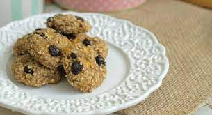

Cookie de banana, aveia e cacau

Ingredientes
- 4 bananas bem maduras
- 200 g de uva passa
- 1 ovo
- 400 g de farinha de aveia
- 30 ml de óleo de coco
- 40 g de chia
- 30 g de açúcar demerara (opcional)
- 30 g de cacau em pó
- 1 colher (sopa) de farinha de coco
- 15 g de fermento químico
- canela em pó QB (opcional)
Modo de preparo
- Em um bowl, amassar a banana, acrescentar todos os ingredientes e misturar bem.
- Moldar a massa como uma bolinha e achatar levemente, dispor em uma fôrma forrada com papel vegetal ou tapete de silicone.
- Levar ao forno a 160º C por 20 a 25 minutos.